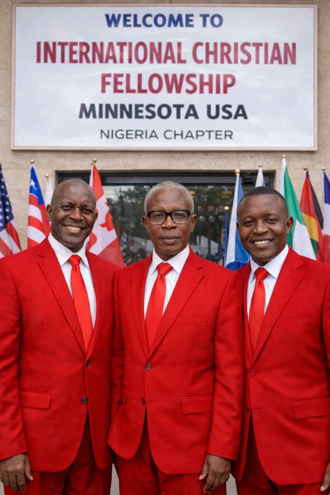
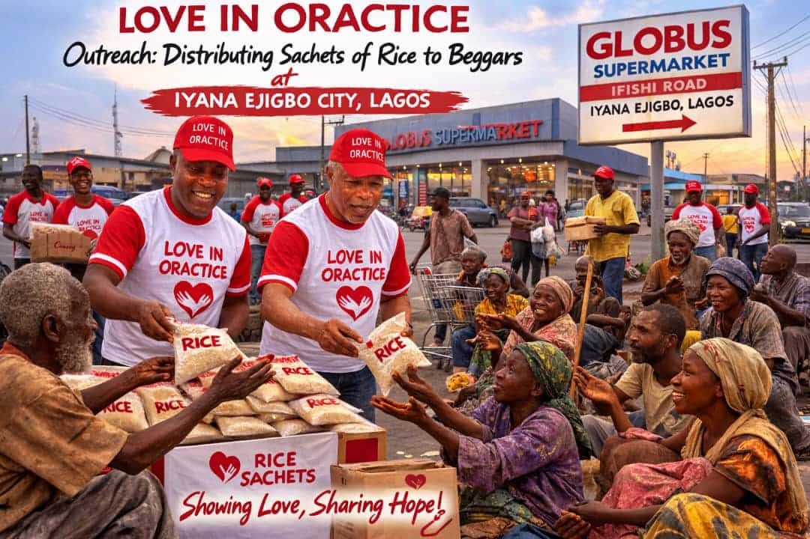
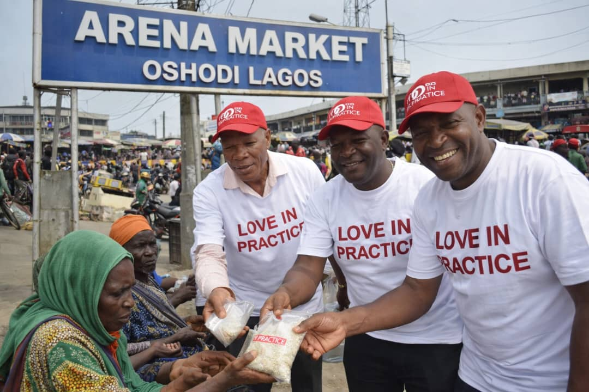
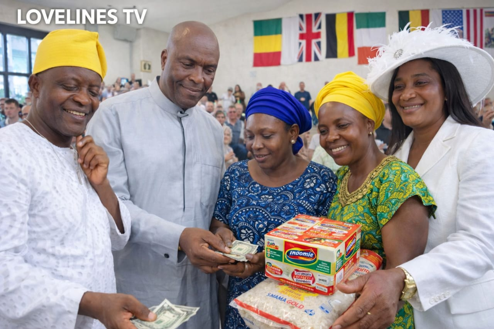

WELCOME TO
LOVELINES INTERNATIONAL CHRISTIAN FELLOWSHIP
(LOVE IN PRACTICE)
Welcome to a place where compassion meets action, and faith becomes service.
At Lovelines International Christian Fellowship, we believe that love is not merely spoken — it is demonstrated.
Across Minnesota, USA, Nigeria and Globally, our mission is clear: To be a light in dark places, a voice for the unheard, and a helping hand to the forgotten.
- Support widows, orphans, and disadvantaged families
- Provide counseling and emotional healing
- Encourage spiritual growth and moral strength
- Promote dignity, unity, and sustainable hope
LOVE IN PRACTICE. COMPASSION IN ACTION. HOPE FOR ALL.
Who We Are
Lovelines International Christian Fellowship is a global faith-based humanitarian and counseling organization dedicated to empowering vulnerable individuals and communities across the world.
Through humanitarian outreach, counseling services, empowerment initiatives, and advocacy programs, we restore dignity, healing, and hope to people facing life’s most difficult situations.
Our mission is to demonstrate Christ-centered compassion through practical service to widows, orphans, prisoners, the oppressed, and disadvantaged communities.
Read More →Our Mission Focus
Caring for the vulnerable, restoring hope, building lives, and transforming communities through love in action.
200+
Countries Reached
1000+
People Counseled
5000+
Lives Supported
100+
Humanitarian Programs
Our Key Services
Humanitarian Relief
Food distribution, clothing support, emergency relief outreach, and welfare programs for disadvantaged communities.
Read More →Counseling & Healing
Trauma recovery, marriage counseling, youth mentoring, emotional healing and spiritual guidance.
Read More →Care for the Vulnerable
Support for widows, orphans, prisoners, elderly individuals, and persons living with disabilities.
Read More →Community Development
Skill acquisition programs, youth empowerment, educational support, and poverty alleviation initiatives.
Read More →Advocacy Programs
Awareness campaigns against abuse, rape, drug addiction, and initiatives promoting peace and unity.
Read More →Discover More Opportunities
Explore our wide range of impactful programs designed to transform lives. From humanitarian support to youth empowerment and spiritual growth, there is something here for everyone. Join us today and be part of a community making real change.
Explore All Services →Faith & Spiritual Growth
Biblical counseling, prayer support, leadership development, evangelism and fellowship programs.
Read More →Love in Action



visitationBe Part of This Mission
Whether you want to volunteer, partner with us, or support humanitarian outreach, you are welcome to join our global mission of compassion and service.
Become a Volunteer